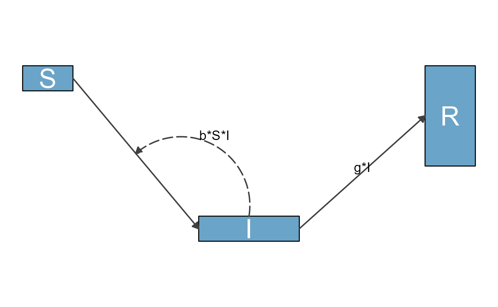

This function takes as input a model consisting of variables/compartments
and flows, and creates a list of data frames with label and position
information for plotting a flow diagram.
The resulting object is used as an input to make_diagram,
which creates a ggplot2 based diagram. The function attempts to make
decent decisions regarding the placement of variables (boxes),
flows (arrows), and labels. However, complex models with complex diagrams
will likely need user modification. This is documented in the vignettes.
prepare_diagram(
model_list,
model_settings = list(varlocations = NULL, varbox_x_size = NULL, varbox_y_size =
NULL, varspace_x_size = NULL, varspace_y_size = NULL)
)A list of model elements. This list is required and must contain these two elements:
variables: A character vector specifying the names of all variables.
flows: A list that is the same length as variables. Each sub-list
element is a character vector of any length specifying the flows into
and out of the variable. Note that flowdiagramr assumes that the
order of flows matches that of the variables vector.
IMPORTANT: All variables entries must start with an upper case letter,
followed by any combination of letters and numbers
(e.g., S, Si, or Aml2). All parameters contained in flows must start
with a lower case letter followed by any combination of letters and
numbers (e.g., b, bBmax, kS, p21S). All variables and parameters MUST
be separated by math notation (e.g., +, -, *, /). Most math functions
(e.g., sin, cos) are currently not supported.
See examples and details below and vignettes.
A list of optional settings to adjust layout. The following elements are supported. If not provided, they default to a single row and all sizes of 1.
varlocations: A matrix containing all model_list$variables entries
in specific locations on a grid. See examples.
varbox_x_size: Either a scalar or a vector that changes the default
width of variable boxes. For example, varbox_x_size = 1.5 makes each
box 1.5 units in width. If a scalar, the value is used for all variables.
If a vector, the length must correspond to number of variables,
and the provided values are applied to the variables in the order
provided in model_list$vars.
varbox_y_size: Same as varbox_x_size but for the height of
the boxes.
varspace_x_size: Either a scalar or a vector that changes the
spacing between variable boxes in the x/horizontal dimension. If
varspace_x_size is a scalar, all spaces between boxes in the x
direction will be the same. For example, varspace_x_size = 1.5 puts
1.5 units of space in the x direction between boxes. If you provide a
vector, it needs to be of dimension one less than the number of columns
in varlocations. Spacing starts at the left, thus the first number is
the spacing between the first column and second column, etc. Spacing
is measured between the right edge of one box to the left edge of
the next box.
varspace_y_size: Same as varspace_y_size but for the vertical
dimension. If you provide a vector, it needs to be of dimension one
less than the number of rows in varlocations. Spacing starts at the
bottom, thus the first number is the spacing between the lowest and
second lowest row, etc. Spacing is measured between the bottom edge
of one box to the top edge og the next box.
See examples and details below and vignettes.
A list of two data frames containing all necessary information
for the model variables/boxes and flows/arrows to be plotted
by the make_diagram function.
The data frames are:
variables: A data frame containing information for all variables.
The data frame contains these columns:
id: A numeric id for each variable.
name: The name of the variable as provided in the model
specification.
xmin: Left edge location of variable box.
xmax: Right edge location of variable box.
ymin: Lower edge of location variable box.
ymax: Upper edge of location variable box.
xlabel: Horizontal position (midpoint) of label.
ylabel: Vertical position (midpoint) of label.
label_text: Text that will appear as the label of the box. Can
be different from name.
outline_color: The outline color of variable boxes.
fill_color: The fill color of the variable boxes.
label_color: The color of the box labels for each variable.
label_size: Text size for variable labels.
flows: A data frame containing information for all flows.
The data frame contains these columns:
id: A numeric id for each flow.
name: The name of the flow. Typically a mathematical expression.
If a main flow with an interaction, this name is for id purposes
only because the label_text will be the actual label displayed
in the diagram. Thus, the name might be duplicated in other rows.
type: Type of flow. One of main, interaction, or external.
from: The variable from which the arrow originate. That is, the
variable donating the flow.
to: The variable to which the arrow will point. That is, the
variable receiving the flow.
xstart: The starting horizontal position of the arrow.
xend: The ending horizontal position of the arrow.
ystart: The starting vertical position of the arrow.
yend: The ending vertical position of the arrow.
xlabel: Horizontal position (midpoint) of label.
ylabel: Vertical position (midpoint) of label.
curvature: The amount of curvature applied to arrow.
Higher numbers indicate more curvature; 0 = straight line.
label_text: The label that will appear in the diagram. This is a
duplicate of name so that user can update label_text as desired
but retain the original math for reference.
line_color: The color of the flow arrow line.
line_size: The size (width) of the flow arrow line.
line_type: The linetype of the flow arrow line.
label_color: Color of label_text.
label_size: The text size of label_text.
arrow_size: The size of the arrow point on the flow line.
show_arrow: Logical for whether to plot the flow arrow line
(TRUE) or not (FALSE).
variables needs to be specified as a vector of model variables,
e.g., variables <- c("Pred","Prey"). flows need to be specified as a
list, with each list entry containing the flows/processes for each
variable in the order in which the variables appear. Flows need to be
named according to VARIABLENAME_flows.
Example:
flows <- list(Pred_flows = c(r*Pred, -k1*Pred*Prey),
Prey_flows = c(g*Prey, -k2*Pred*Prey)). Each flow, i.e. each entry in
the flow vector, needs to be a valid mathematical expression made up of
variables and parameters. The rules are as described above.
As an example, the following includes a parameter b and two variables,
S and I: b*S*I. The following includes a parameter s and two
variables, Bg and I2: Bg*s*I2. See more examples below and in
the vignettes.
The variables and flows data frames returned in the output list from this
function contain a few columns that are provided to make it easier for
the user to make changes to the data frames manually, but are not used
by the package to make the diagram itself. In the variables data frame,
id and name are unique identifiers that are not used by the package
to make the diagram -- changing these will have no impact on the final
diagram. In the flows data frame, id, name, from, and to are
identifiers provided to make it easier for the user to understand each
row of the data frame. Changing these columns will have no impact on the
final diagram. All other columns contain information that impacts the
drawn diagram itself. Users can update them -- and may want to in many
cases -- but any updates to values in the remaining columns will be seen
in the diagram itself. See the description of the output data frames below.
# basic model specification
variables <- c("S","I","R")
flows <- list(S_flows = c("-b*S*I"),
I_flows = c("b*S*I","-g*I"),
R_flows = c("g*I"))
mymodel <- list(variables = variables, flows = flows)
diag_list <- prepare_diagram(model_list = mymodel)
mydiag <- make_diagram(diag_list)
# adding optional specifications
varlocations <- matrix(data = c("S", "", "R",
"", "I", "" ),
nrow = 2, ncol = 3, byrow = TRUE)
mysettings <- list(varlocations = varlocations)
diag_list <- prepare_diagram(model_list = mymodel, model_settings = mysettings)
mydiag <- make_diagram(diag_list)
# use of model_settings to change sizes and spacing, including vectorization
variables <- c("S","I","R")
flows <- list(S_flows = c("-b*S*I"),
I_flows = c("b*S*I","-g*I"),
R_flows = c("g*I"))
mymodel <- list(variables = variables, flows = flows)
var_locs <- matrix(c("S", "", "R", "", "I", ""), byrow = TRUE, nrow = 2)
mysettings = list(
varlocations = var_locs,
varbox_x_size = c(1,2,1),
varbox_y_size = c(0.5,0.5,2),
varspace_x_size = 2,
varspace_y_size = 1)
diag_list <- prepare_diagram(model_list = mymodel,
model_settings = mysettings)
make_diagram(diag_list)

# another simple model for pathogen (prey) and immune response (predator)
variables = c("Pat","Imm")
flows = list(Pat_flows = c("g*Pat*(1-Pat/pmax)", "-dP*Pat", "-k*Pat*Imm"),
Imm_flows = c("r*Pat*Imm", "-dI*Imm"))
mymodel = list(variables, flows)
diag_list <- prepare_diagram(mymodel)
mydiag <- make_diagram(diag_list)
# manually switch to vertical layout
varlocations <- matrix(data = c("Pat", "Imm"),
nrow = 2, byrow = TRUE)
mysettings <- list(varlocations = varlocations)
diag_list <- prepare_diagram(mymodel,mysettings)
mydiag <- make_diagram(diag_list)